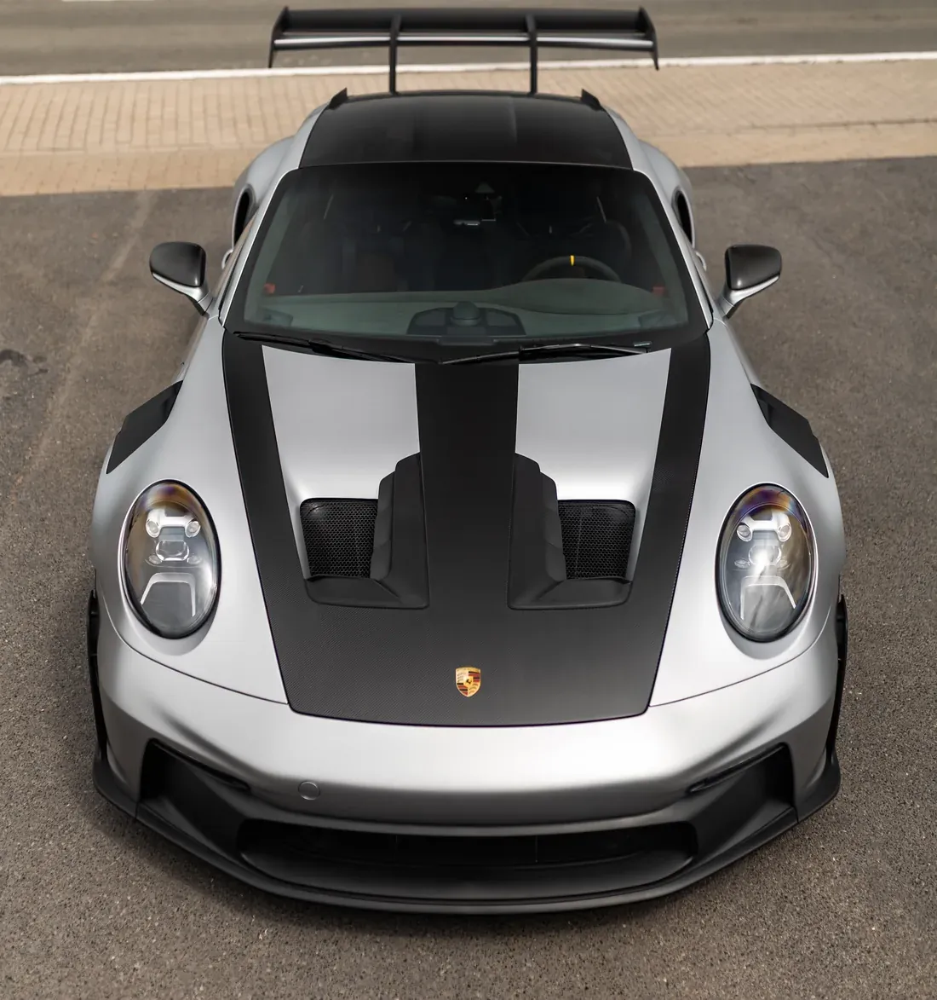
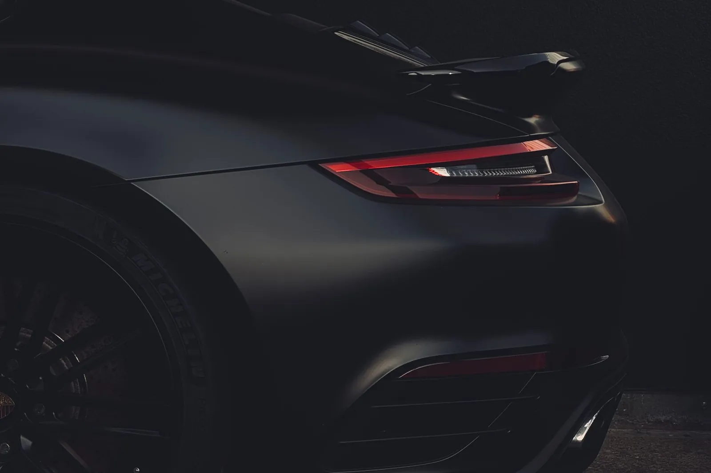
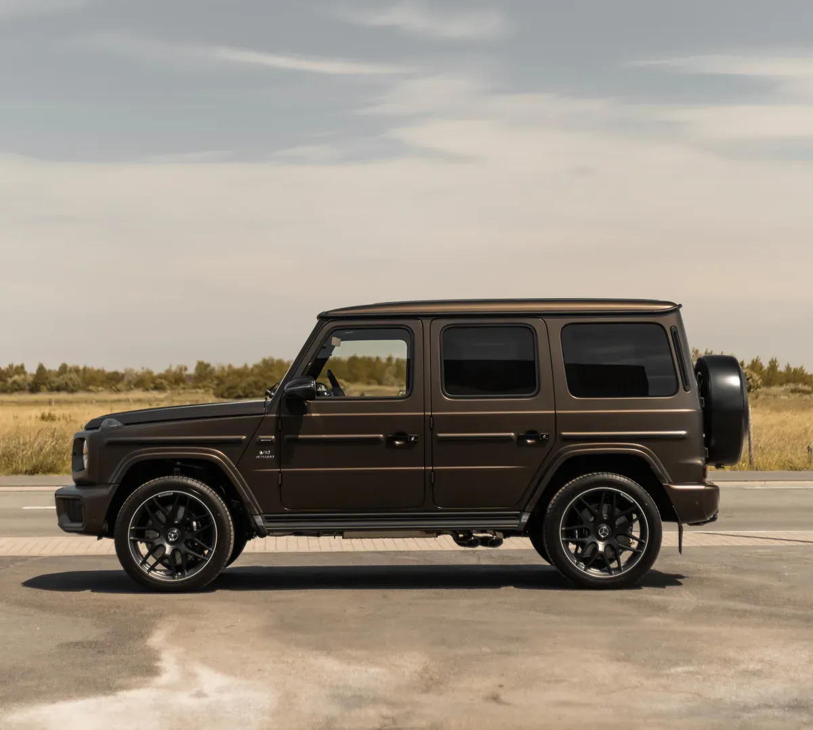
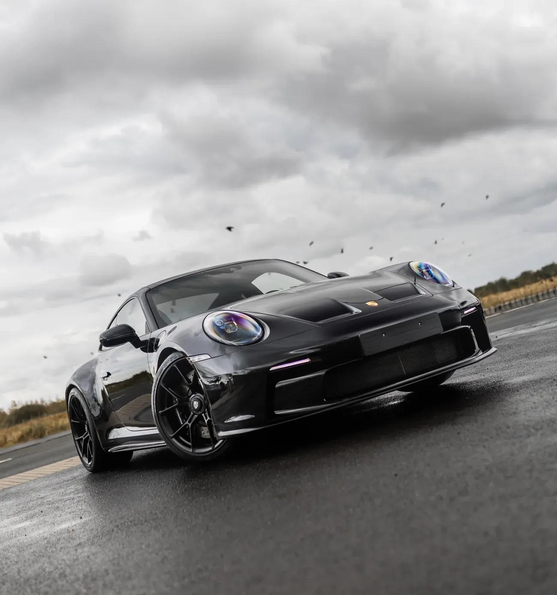
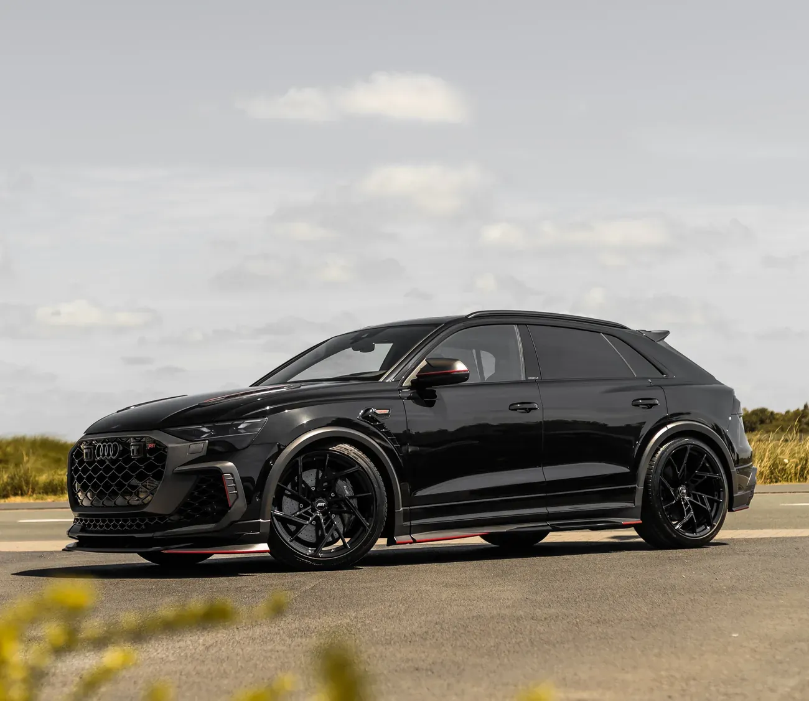
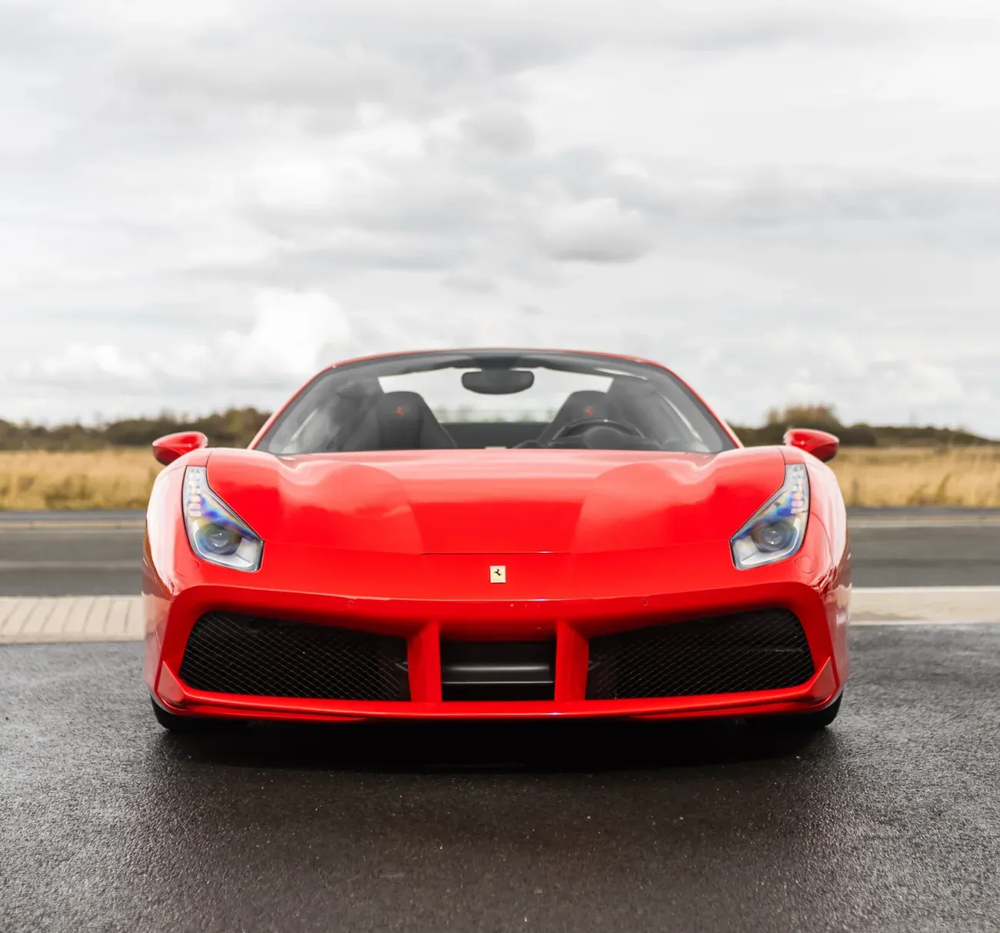
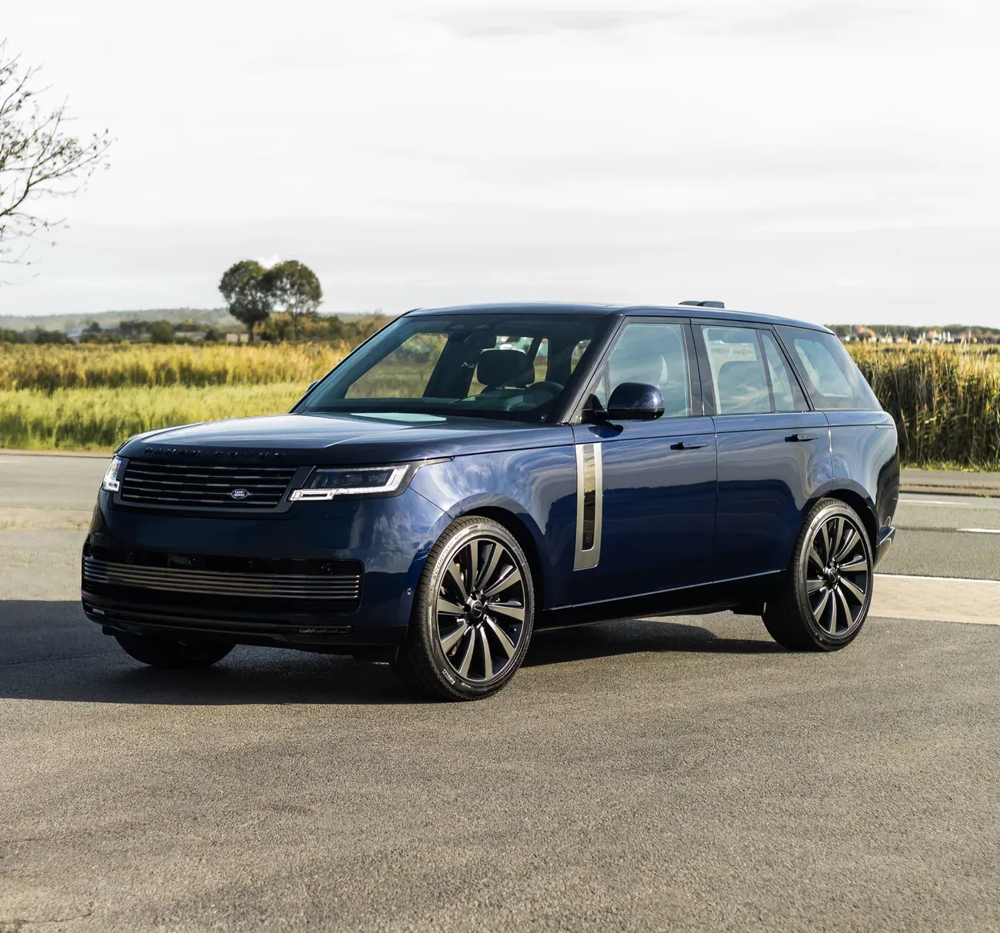
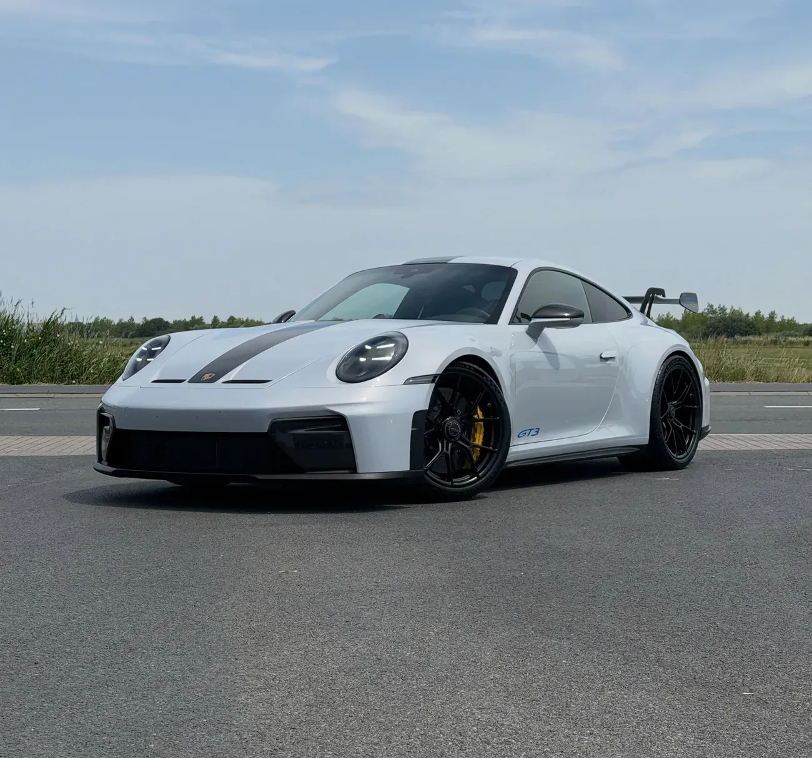
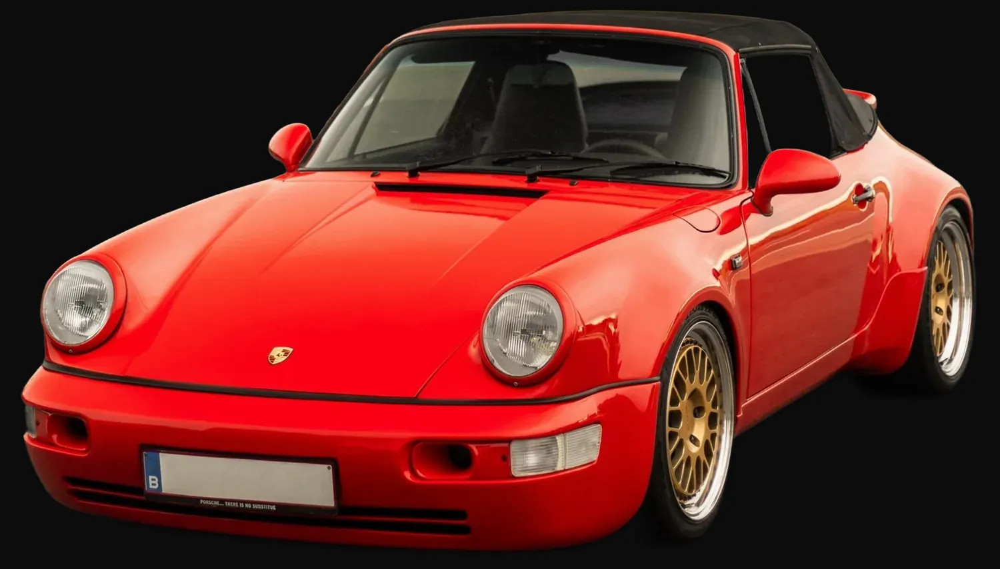
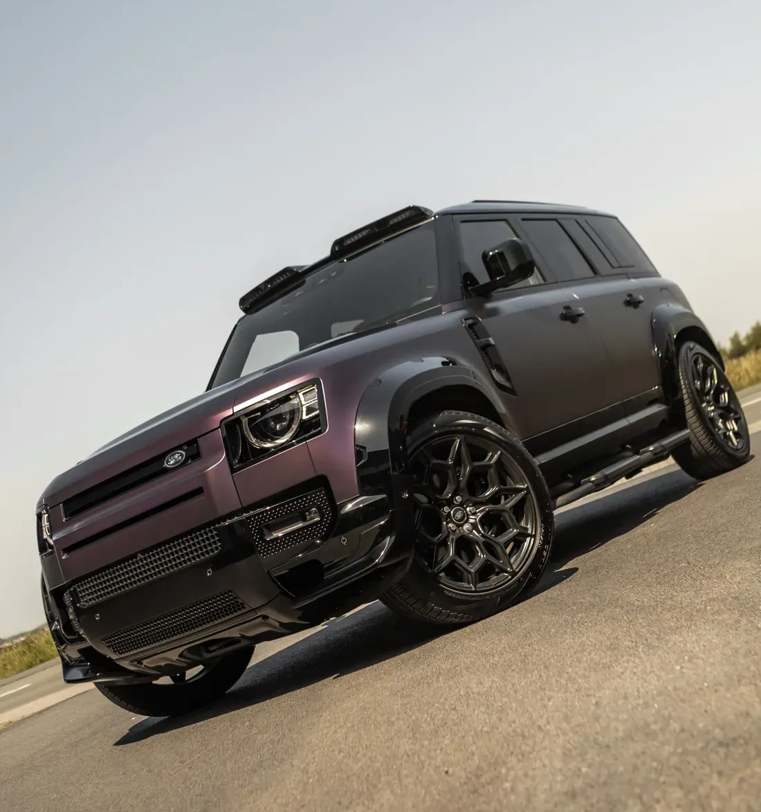

01 / 03
PPF
Een onzichtbare laag tegen steenslag en waskrassen. Een full front of de hele wagen, en ook je schermen en piano black binnenin.
- Gloss
- Matte
- Stealth
- Interieur


Gloss, matte of stealth PPF, een keramische coating of een volledige build met Urban Automotive, ABT of Milltek. We werken het af tot de laatste rand folie klopt.
Of je nu enkel steenslag op je neus wil vermijden of je wagen helemaal wil laten ombouwen: je brengt hem binnen en we bekijken samen wat erbij past.
Een onzichtbare laag tegen steenslag en waskrassen. Een full front of de hele wagen, en ook je schermen en piano black binnenin.

Een keramische coating die je lak dieper laat glanzen en het wassen een stuk makkelijker maakt. Graag met smoke PPF op je lichten erbij.

Bodykits, een nieuwe uitlaat, verlagen op veren of velgen in satin black. Wij bouwen het mee uit en werken het af. Ook voor ruiten tinten en velgen poedercoaten kan je hier terecht.






Elke build zetten we met alle details op Instagram. 26,5K mensen kijken al mee.
Achter BLVCK CAR STUDIO staat Guillaume. Wie zijn wagen binnenbrengt, merkt snel dat hij elke auto behandelt alsof het zijn eigen is. Een limited edition, een klassieker of je dagelijkse SUV: hij luistert naar wat je wil, legt uit wat kan en werkt het af tot de randen kloppen.
Pas dan gaat je wagen de deur uit.
Zelden iemand zo gepassioneerd bezig gezien, resultaat om U tegen te zeggen. Onlangs mijn wagen binnengebracht voor het poedercoaten van mijn velgen, volledige polish in verschillende stappen en deze was terug in showroomstaat. 100% aanrader!
Guillaume is een echte vakman. Heel correct en precies in het detailen en customizen van de auto. Zorgt ervoor alsof het zijn eigen auto is. Echte aanrader!
Topservice bij tinten ruiten auto. Supervriendeljke eigenaar en vlotte communicatie. Een aanrader voor iedereen.
Laat weten waarvoor je komt en stuur gerust een foto van je wagen mee. Dan plannen we een moment om samen te bekijken wat hij nodig heeft.

Ik maakte deze demo voor jullie om te tonen wat er kan. Na een kort gesprek maak ik er iets veel persoonlijkers van, helemaal naar jullie wens.
Vrijblijvend. Ik kom langs of we bellen.
Op maat, op jullie eigen domein.
Geen voorschot. Jullie betalen pas als alles klaar is.
Hosting, domeinnaam en kleine wijzigingen, zoals nieuwe openingsuren.
Omdat een voorbeeld meer zegt dan een mail. Zo zien jullie meteen wat er kan, en het kost jullie niets.
Nee. Het gesprek is vrijblijvend. Vinden jullie het niks, dan is het daarmee gedaan.
Na ons gesprek staat jullie site binnen 10 tot 14 dagen online.
Zeker. Jullie domeinnaam kan gewoon blijven, de nieuwe site komt in de plaats van de oude.
Nee, dat doe ik op basis van ons gesprek. Eigen foto's zijn mooi meegenomen, maar niet nodig om te starten.